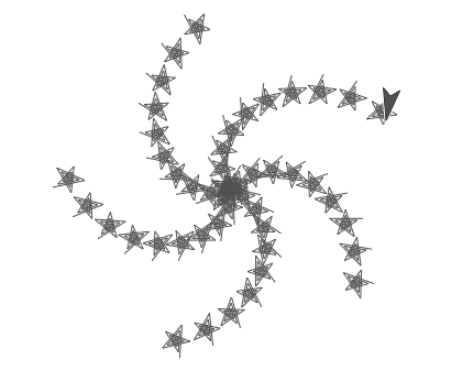
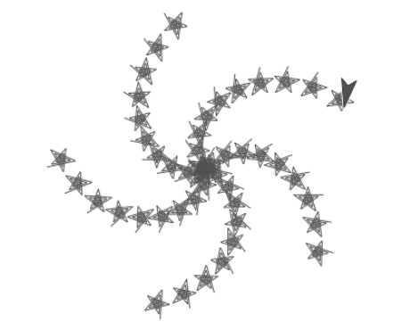
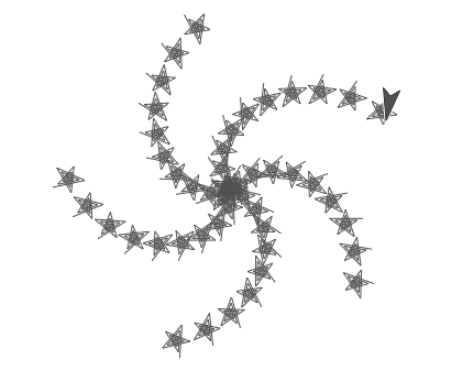
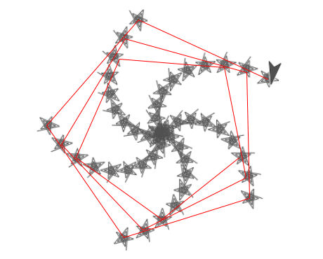
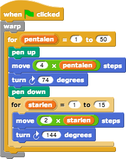
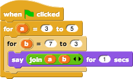

The ability to change the name of the for variable isn't just to make your program self-documenting, although that would be a good reason by itself. But changing the variable name is crucial for nesting for blocks, like this:

The overall structure of this picture is an invisible (because the pen is up while it's traced out) pentagonal spiral. Here are the last few sides of that spiral:

At each vertex (or corner) of that spiral, the script draws a visible (pen down) star-shaped spiral. The script has to keep track of the length of the next pentagon-spiral side and also the length of the next star-spiral side. So it's important that we used two different variable names, pentalen for the pentagon-spiral length and starlen for the star-spiral length.
By the way, if you're impatient with how long it takes for Snap! to draw these pictures, find the grey warp block in the Control palette and put the entire script inside it:

Predict what the following script will do before you try it. (Write down everything it will say, in the right order.)

Optional open-ended problem: We've been drawing spirals by repeating a move-and-turn sequence with a varying move length and a constant turn angle. What kinds of pictures will you get if you use a constant move and a varying turn? Don't decide too quickly that you've exhausted the possibilities; you can get an infinite variety of shapes! (And draw at least 300 repetitions in each experiment.)